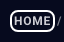
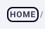

Breadcrumb
Where this page sits: the steps above it as soft links, the page itself in white, a slash between them. Cut to its parent it reads as one step back, as the case screen draws it under 900px. Everything on this page is drawn by design/system/components/breadcrumb.css through index.css, the same file a screen will load.
Anatomy
| Part | Class or element | What to change there |
|---|---|---|
| The trail (the molecule's own) | nav.crumb > ol | the type: 12px, 700, uppercase, --tracking-caps; the 6px gap between steps; one line that wraps |
| A step (the molecule's own) | li > a | the soft grey, no underline; white under the pointer; the 2px ring on keyboard focus |
| The separator (the molecule's own) | li + li::before | the slash, at 60% of its ink, 6px before the next step |
| The page (the molecule's own) | [aria-current] | white, not a link: a page is never its own way out |
| Ground | .crumb--lit, .crumb--fit | the ink on a coloured band or on the case head's stage; none for the page's ground |
| The way back | .crumb--back, .crumb--fit under 900px | every step but the one above the page is hidden from sight, never from the markup, and a back mark ‹ stands before it |
Holds: the inventory lists the Text link, and a step is a link, but no step wears .link: the atom is pink at 13px and the step is soft grey in small capitals, so the screens draw the step as a plain anchor and the molecule styles it. This page keeps what the screens draw. Whether the step should become a Text link tone is a question for the founder (the report).
Variants and sizes
Two axes and one size. Each carries its rule, so the next screen picks by the rule. The height and the type below are read from the rendered trails.
- Emphasis = the ground it stands on. Plain on the page's ground (My items). Lit on a coloured band (the catalogue's, Provably fair's and Responsible play's heads): the steps turn white, because on the blue's lightest stripe the soft grey falls to 3.4:1 and white holds 4.9:1, measured at D-245. Fit in the case head, on the stage: the soft grey stays, the stage is dark in both themes.
- Content = the full trail or the way back. The full trail is the default.
--backcuts the trail to its parent with the back mark. The fit form does it by itself under 900px (D-232);--backis declared and no coloured state wears it yet, so step 6 verifies it on a phone. - Size = one. The crumb is a line of orientation, never a heading, so it has no size axis.
| Emphasis | Full trail | The way back | Where it stands |
|---|---|---|---|
| Plain | My items, over the account head | ||
| Lit | the catalogue's, Provably fair's and Responsible play's heads | ||
| Fit | The full trail from 900px, the way back under it: narrow the window to see it cut. |
the case head | |
When to use
A crumb says where a page sits and gives the way back one tap away, on every page below Home: the case screen, the catalogue, My items, Provably fair and Responsible play carry one today. The inventory also lists Deposit and Sign in, which the kit shows as layers over the case screen (deposit-dialog.html, signin-dialog.html), so the crumb they carry is the case screen's. It is the structural layer of the page's SEO, the breadcrumb of the information architecture, and a screen reader reads it as a navigation named Breadcrumb. The page itself is the last item, marked aria-current="page" and never a link.
Rule and anti-rule
Use it
Under the case screen's head: Home, Cases, Ironbound, the case as the current page, fitted to its parent on a phone. A page two levels down, or a page whose way up is not the header's.
Take another component
A destination in the page's own words is a Text link ("How it works"). A way between the sections of one page is the Category bar or Tabs. The rail and the bottom bar carry the places, the crumb only the path to this page. Nothing the crumb shows is a state: a step that is not a link is a page, never a disabled step.
States
Live at rest, on this page's theme: point at a step, press Tab to reach it. The page itself is not interactive and has none.
Snapshots of the same steps, dark on the left and light on the right, taken with reduced motion. The base set is shot once on the plain step; after it, only a named difference.
--text-body to --text-hi

--line-focus, 2px, offset 2px
--text-body-on-plate to --text-on-plate--line-focus, over the band- The same answer, said once: the lit step is white at rest, so its hover changes nothing and is not shot. The ring is the same on all three grounds. There is no press state: kit.css drew none and a step is a plain link.
- The ring on a band is
--line-focus, which the light theme sets to the dark ground: it reads against the blue band in both themes.
node design/kit/tools/shoot-states.js http://localhost:8765/ breadcrumb # re-shoot after a change to breadcrumb.css or its tokens node design/kit/tools/shoot-states.js http://localhost:8765/ breadcrumb --check # step 9: fails if a snapshot drifted
In the code
| Token | Kind | Dark | Light |
|---|
Read live from tokens.css. Geometry, type and tracking come straight from the primitives. No colour primitive is read and no component token is made: the plain trail reads the ground roles, the lit and fit trails the on-plate roles (--text-base-on-plate names this block).
File: design/system/components/breadcrumb.css, loaded by design/system/index.css in the molecules' group.
<nav class="crumb" aria-label="Breadcrumb"><ol> <li><a href="...">Home</a></li> <li><a href="...">Cases</a></li> <li><span aria-current="page">Ironbound</span></li> </ol></nav> <nav class="crumb crumb--lit" ...> <!-- on a coloured band --> <nav class="crumb crumb--fit" ...> <!-- the case head: cuts to its parent under 900px -->
Stands on: the case screen, the catalogue, My items, Provably fair, Responsible play. Until step 8 those screens still read kit.css; step 6 moves them onto this file.